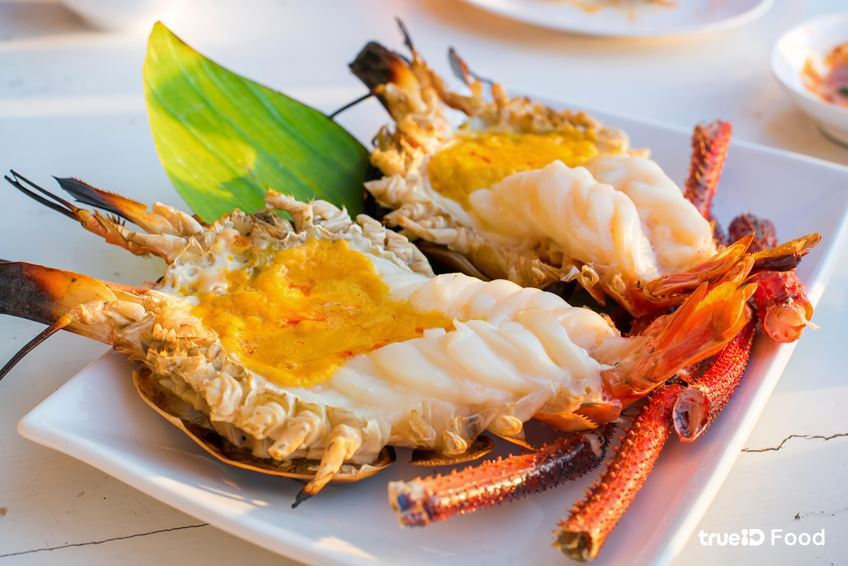
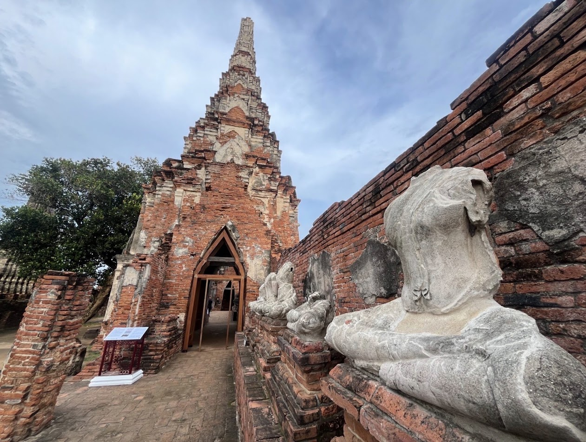
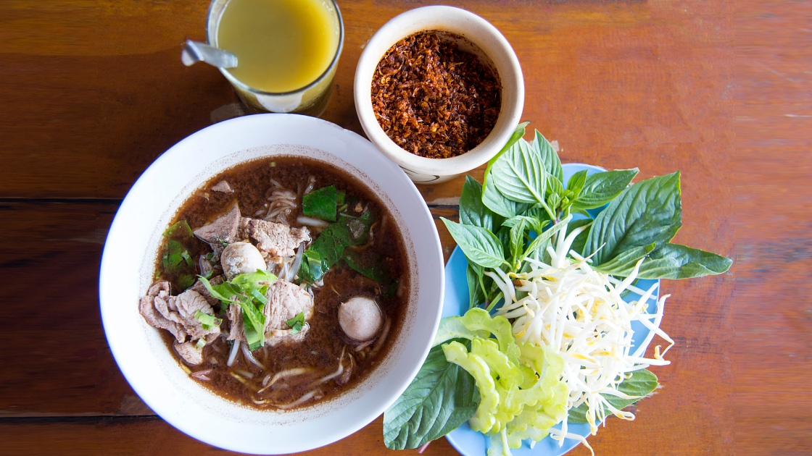
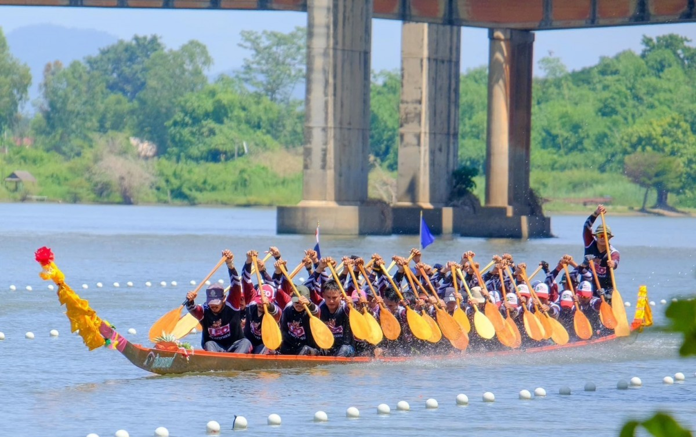
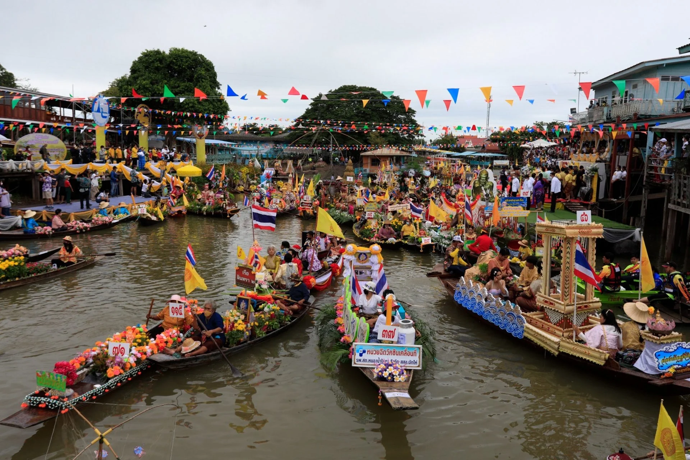
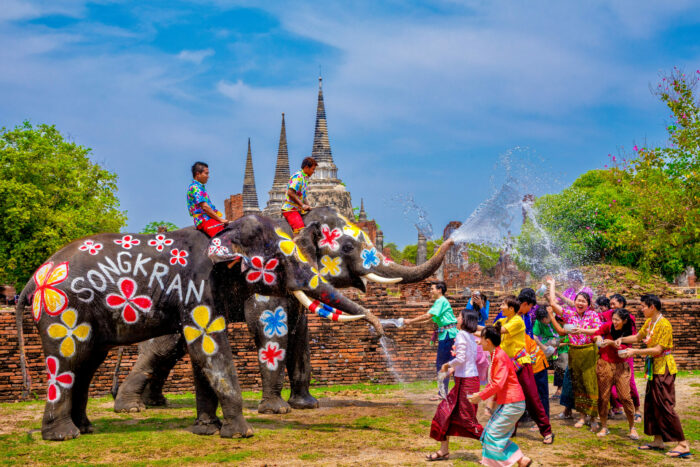
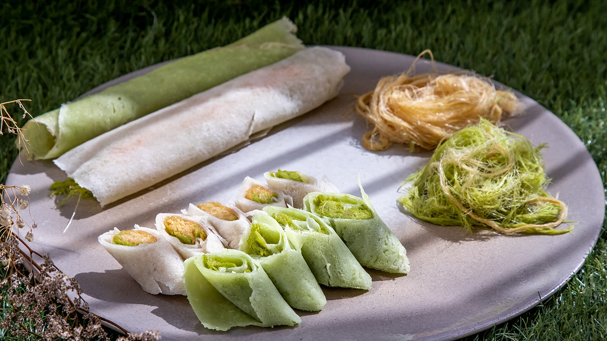

กุ้งแม่น้ำอยุธยา
กุ้งแม่น้ำเป็นอาหารขึ้นชื่อของอยุธยา โดยเฉพาะกุ้งเผาที่มีเนื้อแน่น และมันกุ้งเป็นเอกลักษณ์ เป็นเมนูยอดนิยมของนักท่องเที่ยว เมื่อมาเยือนพระนครศรีอยุธยา
สำรวจเสน่ห์ของพระนครศรีอยุธยา ผ่านศิลปวัฒนธรรม อาหารพื้นถิ่น กุ้งแม่น้ำ ประเพณี เทศกาล และวิถีแห่งศรัทธา
ศิลปวัฒนธรรมของอยุธยาเกิดจากการสั่งสม ภูมิปัญญา ความเชื่อ และการแลกเปลี่ยน กับผู้คนจากหลากหลายพื้นที่ จนเกิดเป็นเอกลักษณ์ที่ยังคงปรากฏ ผ่านโบราณสถาน ศิลปกรรม และงานช่าง

พระปรางค์ เจดีย์ พระพุทธรูป จิตรกรรม และงานช่างต่าง ๆ สะท้อนความรุ่งเรืองและภูมิปัญญา ของผู้คนในสมัยอยุธยา
ศิลปกรรมเหล่านี้ยังเป็นหลักฐานสำคัญ ในการศึกษาประวัติศาสตร์ และวิถีชีวิตของผู้คนในอดีต
อาหารเป็นอีกหนึ่งเสน่ห์ของอยุธยา โดยเฉพาะอาหารที่เกี่ยวข้องกับวิถีชีวิต ริมแม่น้ำและวัฒนธรรมการกิน ของชุมชนต่าง ๆ

กุ้งแม่น้ำเป็นอาหารขึ้นชื่อของอยุธยา โดยเฉพาะกุ้งเผาที่มีเนื้อแน่น และมันกุ้งเป็นเอกลักษณ์ เป็นเมนูยอดนิยมของนักท่องเที่ยว เมื่อมาเยือนพระนครศรีอยุธยา

อาหารพื้นถิ่นสะท้อนวิถีชีวิตของผู้คน ทั้งอาหารจากแม่น้ำ เครื่องแกง อาหารรสจัด และอาหารที่ได้รับ อิทธิพลจากชุมชนหลากหลายวัฒนธรรม
ประเพณี ความเชื่อ และศรัทธา เป็นส่วนสำคัญของวิถีชีวิต และสะท้อนความสัมพันธ์ระหว่าง ผู้คน ชุมชน และศาสนา

ประเพณีท้องถิ่นเป็นส่วนหนึ่งของชีวิต ช่วยเชื่อมโยงผู้คนในชุมชน และเป็นพื้นที่สำหรับการสืบทอด ภูมิปัญญาและวัฒนธรรม จากรุ่นสู่รุ่น
ศาสนาและความเชื่อมีบทบาทสำคัญ ต่อวิถีชีวิตของผู้คน วัดและศาสนสถานเป็นศูนย์กลาง ของชุมชนและกิจกรรมทางวัฒนธรรม
ประเพณีและเทศกาลต่าง ๆ สะท้อนความเชื่อ ความร่วมมือ และการสืบทอดวัฒนธรรมของชุมชน

กิจกรรมทางน้ำที่สะท้อนความสัมพันธ์ ระหว่างผู้คนกับแม่น้ำ และความศรัทธาทางพระพุทธศาสนา โดยมีการจัดขบวนเรือ และกิจกรรมเกี่ยวกับวันเข้าพรรษา

สงกรานต์เป็นประเพณีสำคัญของไทย เกี่ยวข้องกับการทำบุญ การรดน้ำขอพรผู้ใหญ่ และการใช้เวลาร่วมกัน กับครอบครัวและชุมชน
ของหวานเป็นอีกส่วนหนึ่งของวัฒนธรรมอาหาร ที่สะท้อนภูมิปัญญาและรสนิยม ของผู้คนในท้องถิ่น

ขนมไทยและของหวานที่พบในอยุธยา มีความหลากหลาย ทั้งขนมที่ทำจากแป้ง น้ำตาล กะทิ และวัตถุดิบในท้องถิ่น รวมถึงของฝากที่นักท่องเที่ยวนิยมซื้อกลับบ้าน